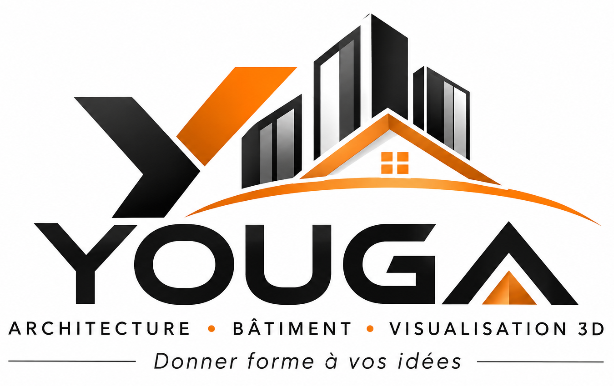
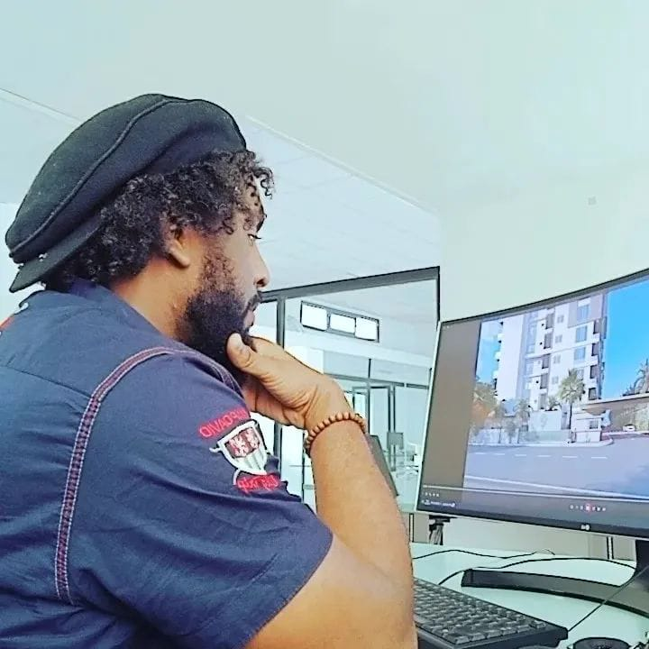

Architecture & conception
Donner une structure à vos idées et traduire vos intentions en propositions architecturales lisibles.
En savoir plus ↗
L'espace commence par une vision
De la première intention à la visualisation, YOUGA imagine et met en forme des espaces avec précision, créativité et exigence.

Une vision claire.
Des espaces qui prennent forme.
YOUGA associe sens du détail, maîtrise visuelle et compréhension des espaces pour accompagner vos idées vers une représentation concrète.
Ce que nous faisons
Une approche transversale de l'architecture et du bâtiment, portée par la conception et l'image.
Donner une structure à vos idées et traduire vos intentions en propositions architecturales lisibles.
En savoir plus ↗Une sensibilité au projet dans sa globalité, de la réflexion sur les espaces à leur concrétisation.
En savoir plus ↗Révéler le potentiel d'un projet grâce à des volumes, des matières, des lumières et des perspectives.
En savoir plus ↗Sélection de projets
Quelques fenêtres sur notre univers. Les présentations complètes sont disponibles lors d'un échange avec YOUGA.
À NOTER Ces emplacements sont des maquettes de présentation, pas des réalisations attribuées à YOUGA. Nous y intégrerons ses vrais rendus et projets dès réception des images.
Aller plus loin
La signature YOUGA
Un projet mérite d'être compris avant d'être représenté.
YOUGA place l'écoute, la réflexion et la qualité de représentation au cœur de sa démarche. Chaque volume, chaque ligne et chaque perspective contribuent à raconter une intention.
Votre projet commence ici
Parlons de votre besoin, de votre vision et de la manière dont YOUGA peut vous accompagner.
Contacter YOUGA sur WhatsApp ↗ARCHITECTURE
BÂTIMENT
VISUALISATION 3D